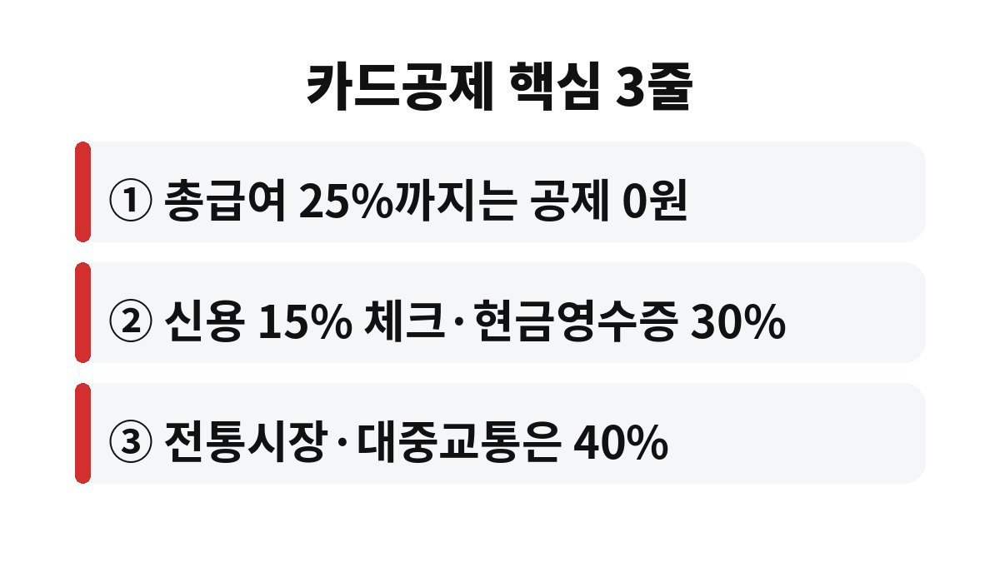

연말정산 카드공제는 연봉의 25%를 넘게 쓴 금액부터만 공제가 시작된다. 카드를 열심히 쓴 직장인이라면 내 사용액이 이 문턱을 넘었는지 궁금하지 않은가.
11월은 연말정산 준비의 마지막 골든타임이다. 12월 31일까지 쓴 금액이 올해 공제에 잡히므로 지금 전략을 바꾸면 환급액이 달라질 수 있다. 연말정산 카드공제의 기본 구조부터 차근차근 살펴본다.
카드 소득공제는 쓴 돈 전체를 깎아주는 제도가 아니다. 총급여의 25%까지는 아무리 써도 공제를 받지 못한다. 이 구간을 흔히 최저 사용금액이라고 부른다. 예를 들어 총급여가 4,000만원이면 1,000만원까지는 공제가 0원이다.
그래서 연초에 카드를 많이 쓴 사람보다 연말까지 문턱을 넘긴 사람이 유리하다. 문턱을 넘기지 못했다면 카드를 아무리 써도 공제 혜택은 없다. 이 사실을 모르고 공제를 기대했다가 환급이 적어 실망하는 경우가 많다.
요점: 총급여의 25%까지는 공제가 없고, 초과분에만 공제율이 적용된다.
문턱을 넘은 뒤에는 결제 수단마다 공제율이 달라진다. 신용카드는 15%, 체크카드와 현금영수증은 30%가 일반적인 기준이다. 전통시장과 대중교통 사용분은 40%까지 올라간다. 같은 금액을 써도 체크카드가 공제는 두 배 크다는 뜻이다.
다만 신용카드는 할부와 포인트, 청구 할인 같은 혜택이 따로 있다. 공제만 보고 무조건 체크카드로 갈아타기보다 혜택을 함께 계산하는 것이 현명하다. 전략은 단순하다. 25% 문턱을 넘기 전에는 혜택이 좋은 신용카드를 쓰고, 문턱을 넘긴 뒤부터는 체크카드와 현금영수증으로 바꾸는 방식이다.
| 구분 | 공제율 |
|---|---|
| 신용카드 | 15% |
| 체크카드·현금영수증 | 30% |
| 전통시장·대중교통 | 40% |

공제에는 한도도 있다. 총급여 7,000만원 이하 근로자는 일반적으로 300만원 안팎이 상한이다. 소득이 더 높으면 한도가 줄어든다. 세법은 해마다 조금씩 바뀌므로 정확한 금액은 국세청 홈택스에서 반드시 확인해야 한다.
지금 당장 할 일은 세 가지다. 첫째, 올해 1월부터 지금까지 카드 사용액을 합산한다. 둘째, 총급여의 25%와 비교해 문턱을 넘었는지 계산한다. 셋째, 아직 못 넘었다면 남은 두 달 동안 어떤 카드를 쓸지 정한다. 문턱을 넘은 사람은 12월 결제를 체크카드로 돌리기만 해도 공제액이 달라진다.
또 하나 놓치기 쉬운 부분이 있다. 맞벌이 부부는 소득이 낮은 쪽이 아니라 총급여가 높은 쪽에서 공제를 받는 것이 유리한 경우가 많다. 문턱이 급여에 비례하기 때문에 한쪽에 몰아서 쓰는 방식이 효과적일 수 있다. 부양가족 명의로 쓴 금액이 합산되는지도 함께 확인하는 편이 좋다.
실제 사례로 계산해 보자. 총급여 5,000만원인 직장인은 1,250만원까지 공제가 없다. 올해 신용카드로 1,800만원을 썼다면 초과분 550만원에 15%가 적용되어 82만 5천원이 공제 대상이 된다. 같은 550만원을 체크카드로 썼다면 165만원이 공제 대상이다. 차이가 두 배라는 점이 분명히 보인다.
여기서 주의할 점은 공제 대상 금액이 곧 환급액은 아니라는 것이다. 소득공제는 과세표준을 줄여주는 방식이라 내 세율을 곱한 만큼만 세금이 줄어든다. 세율이 15%라면 165만원 공제는 대략 25만원 안팎의 절세로 이어진다. 그래도 연말까지 결제 수단만 바꿔 얻는 금액이라면 해볼 만하다.
마지막으로 현금영수증도 챙기자. 현금으로 결제했다면 번호를 입력해 발급받아야 공제에 잡힌다. 전통시장이나 대중교통 이용분은 따로 집계되니 홈택스 간소화 서비스에서 합계가 맞는지 보는 습관이 필요하다.
카드공제는 연말정산의 여러 항목 중 하나일 뿐이다. 연금저축과 IRP, 월세, 의료비, 기부금 같은 세액공제는 환급에 직접 영향을 준다. 카드공제는 소득공제라서 세율을 곱해 환급이 계산되므로 체감 금액이 생각보다 작을 수 있다. 그래서 카드만 신경 쓰기보다 전체 항목을 함께 점검해야 한다.
올해 카드 사용액은 문턱을 넘었는가. 아직이라면 남은 기간 어떤 결제 수단을 선택할지 지금 정해두자. 이 글이 도움이 되었다면 구독으로 다음 글도 받아보길 바란다.
※ 본 글은 일반적인 정보 제공을 위한 것이며 투자 권유가 아니다. 세법은 변경될 수 있으므로 정확한 내용은 국세청 안내를 확인하길 바란다.